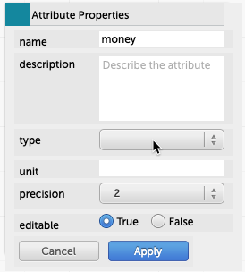

15 Types of Attributes
In CODAP, most attributes are in one of several categories. The most important of these are:
- numeric—The values are numbers, and they get plotted on numeric axes with continuous scales. It makes sense to compute measures such as
mean()using numeric attributes. An example isHeight. - categorical—The values are text, and cases with the same value can form a group. An example is
Marital_status.1 - dates–The values are continuous like numerics, but they are dates or times, which have special properties. See the chapter about dates and times.
15.1 How CODAP gets it wrong
For the most part, CODAP interprets your data values the way you expect. But there are exceptions.
Numeric variables that are really categorical. In the original Titanic data set, the survived attribute is 0 for “died” and 1 for “lived.” That’s just the way the data were entered; it was easier to enter ones and zeros than typing in “died” or “lived” so many times.
Or imagine a dataset about students with an attribute called class that holds their graduation year, so that a value of 2025 means, “Class of 2025.” This is a numeric variable, but really its underlying purpose is categorical: every case gets put into one of (usually four) categories.
Categorical variables that are really numeric. Sometimes, data are entered with text and numbers, but you really care only about the numbers. For example, in some Census data, if you ask for number of children, you get values such as, “0 children present” and “1 child present,” but then “2”, “3”, and so forth:

Number_of_children attribute.Often, any text that’s not a number will fool CODAP into thinking it’s categorical. In the illustration, all it takes is the dollar signs to mess things up. The graph is not only categorical, it’s in the order of the table instead of numerical order!

15.2 How to fix it
There are three ways to address this problem.
Attribute properties box
One is to change the type in the attribute properties box. Click on the column heading to get the menu, then choose Edit Attribute Properties…. The box appears; choose a type in the type menu.
You can also change the name, specify units, give a description, tell how many decimal places you want, and restrict editing!


money attribute to numeric.In the graph
The axis labels on a graph are also menus. You can use the menus to change which attribute is displayed, but there’s more: down at the bottom, you can change the way the graph displays the attribute with the commands Treat as Categorical or Treat as Numeric. As an example, here is some Titanic data where 1 means “survived” and 0 means “died”:

survived is treated as numeric
survived treated as categoricalMaking a new attribute
Continuing with the Titanic example, suppose we wanted to display the values as survived and perished instead of as 1 and 0.
Then we could use the technique described in the section about recoding categorical attributes.
To recap,
- Drag
survivedto the left to make groups of each value. - Make a new attribute next to
survived(maybe call itdidTheyLiveor something suitable). - Type
survivednext to the1andperishednext to the0. - Substitute the new attribute for
survivedon a graph.
It will look like this:

15.3 In the cracks: Ordered categoricals, discrete numerics
Some sets of values, by their nature, share some properties of both categorical and numeric attributes.
For example, ages in Census data are always whole numbers. Even though people can be 20.75 years old, in the data you’re 20 until you turn 21. One consequence of this is that, although will generally group data (by dragging left in the table) with categorical attributes, and never with decimals, there are situations when whole-number numerics are perfectly good for grouping. That’s exactly what we did in one of our first lessons with age and height.
And some categorical values, e.g., {frosh, soph, junior, senior} have a natural order. When CODAP has no clue about the order, it alphabetizes them. But you can change that by re-ordering the values on a graph. You might do that when exploring education in Census data.
Despite our growing suspicion that there is really no such thing as a categorical attribute, they can be really convenient.↩︎